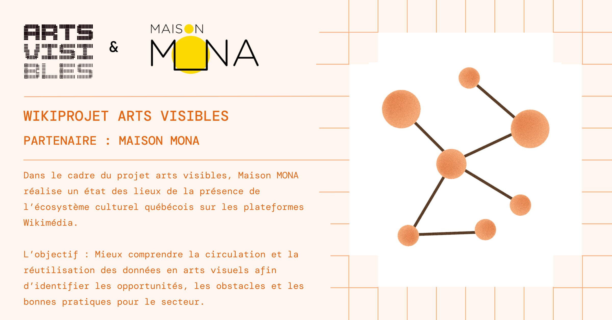
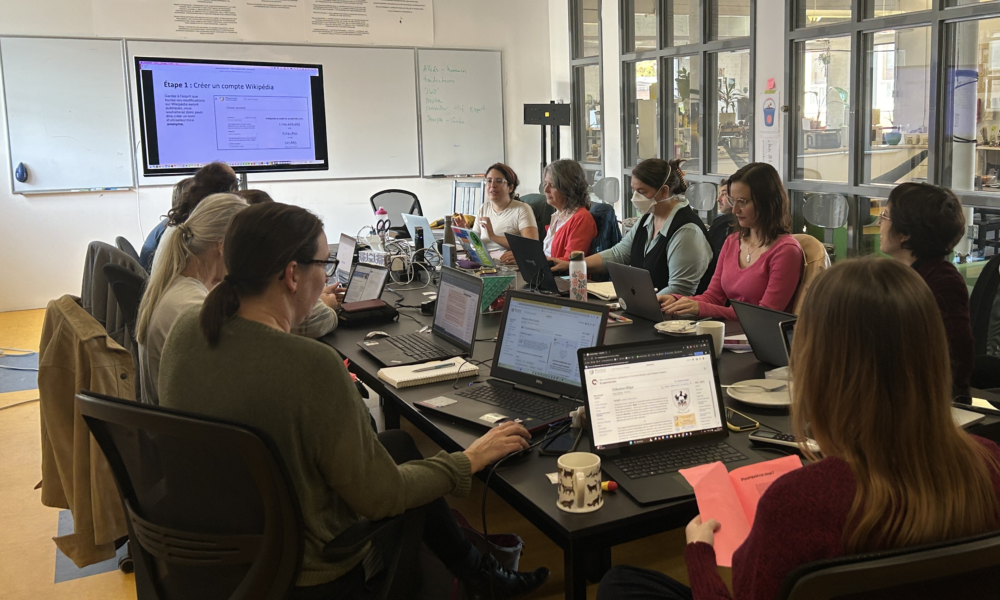
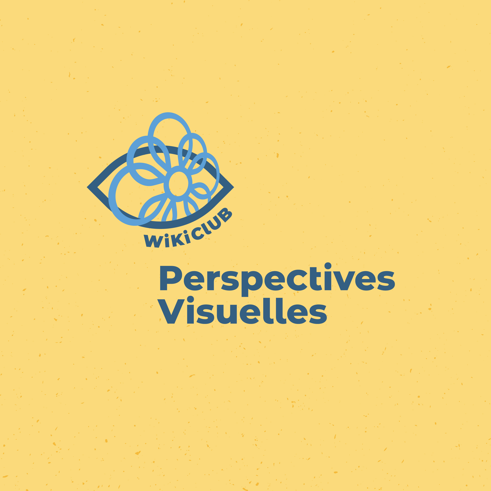
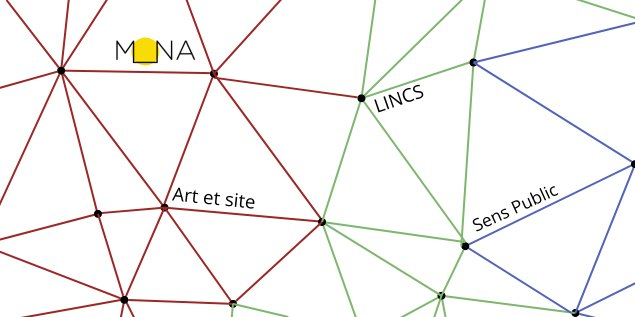

La Maison MONA développe une expertise sur des projets wiki en lien avec la découvrabilité des œuvres et des artistes visuels au Québec. Depuis 2023, c'est en collaboration avec de nombreux partenaires et artistes que l'équipe contribue au rayonnement de l'écosystème culturel québécois sur les plateformes Wikimédia.

Dans le cadre du projet arts visibles - laboratoire sur la découvrabilité et les données en arts porté par le RAAV, nous allons documenter la présence de l'écosystème culturel québécois sur les plateformes Wikimédia: Wikidata, Wikimedia commons, Wikipédia. Nous rencontrons différents acteur·rice·s dans le milieu pour évaluer la présence et la documentation des arts visuels québécois sur Wikidata. Cet état des lieux nous permettra, dans un second temps, d'effectuer des contributions ciblées pour faciliter l’éventuel investissement de la plateforme par les organismes et les artistes. Ce travail est documenté en temsp réel dans le WikiProjet arts visibles.
Nous menons également une étude critique des problématiques liées à la diffusion des renseignements personnels et des images sur ces plateformes. Il s'agit d'évaluer les conséquences liées à la perte de contrôle des images dans Wikimédia Commons, notamment les risques de plagiat, de « vol » ou réutilisation par l’IA, ainsi que de rendre en considération les usages pernicieux des données liées, tels que le cyberharcèlement et le vol de renseignements personnels sur Wikidata et Wikipédia.

Depuis 2024, la Maison MONA propose des activités de formation et de contribution aux plateformes Wikidata, Wikimédia Commons et Wikipédia destinées aux centres d’artistes autogérés du Québec. L'équipe est notamment allée à Caravansérail (Rimouski), Sporobole (Sherbrooke), Atelier Silex (Trois-Rivières) et Est-Nord-Est (Saint-Jean-Port-Joli).
Nous remercions Wikimédia Canada et le Conseil des arts du Canada pour leur soutien.

Suite à près de deux ans de recherche-action sur la valorisation de l'art public au Québec avec les plateformes Wikidata, Wikimédia Commons et Wikipédia, l'expertise de notre équipe a été mobilisée par Culture Centre-du-Québec et ses partenaires * pour participer à un wikiclub destiné aux artistes visuels du Centre-du-Québec et des autres communautés francophones du Canada. En tant que wikimédiennes en résidences, Alexia et Lena ont animé des séances de travail collaboratif, notamment dans le but de partager nos connaissances spécialisées à l'intersection des pratiques Wiki et du milieu des arts visuels au Québec.
* La Fédération culturelle canadienne-française (FCCF), La Maison des artistes visuels francophones (La Maison) et le Conseil culturel et artistique francophone de la Colombie-Britannique (CCAFCB) et arts visibles, laboratoire sur la découvrabilité et les données en arts visuels

De mai 2023 à juin 2024, la Maison MONA met en place une initiative pour le rayonnement des artistes et de l’Art public sur les plateformes publiques Wikidata, Wikimédia Commons et Wikipédia (WikiProject). Il s’agit de tester la potentialité, la viabilité et l’utilité des données ouvertes et liées et ainsi susciter un intérêt pour le web sémantique auprès du milieu artistique et culturel. Mêlant activités de recherche, transferts de connaissances et collaboration avec le milieu universitaire et artistique, ce projet a pour but d’identifier les initiatives actuelles, de comprendre les besoins et les enjeux spécifiques au secteur des arts visuels, de former les artistes aux bonnes pratiques, et d’explorer les usages actuels et possibles de ces communs numériques. Nous sommes heureux·se·s de compter parmi nos partenaires l’infrastructure de recherche Linked Infrastructure for Networked Cultural Scholarship (LINCS), le groupe de recherche Art et site de l’Université de Montréal, et la revue en libre accès Sens Public. Ainsi, une série d’articles en libre accès, dont la publication est prévue tout au long de l’année 2024, reviendra sur les différentes étapes de ce projet, sur les réalisations accomplies et sur les outils développés. Les membres de l’équipe animeront régulièrement des séances de formation et d’idéation ouverte au public. Les informations entourant ces activités, qui se tiendront en présentiel à l'UdeM, sont disponibles à partir de notre page Facebook.
Nous remercions le Conseil des arts du Canada de son soutien.